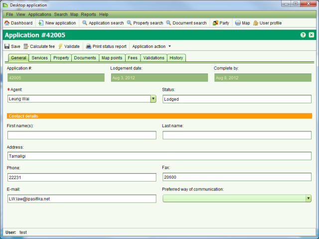

The Application Details screen allows you to enter the details for a new application and/or
edit the details of an existing application. To create a new application, click the
Applications > New Applications menu or select  New application. To edit an application, select the
application in the assigned or unassigned application lists on the Dashboard and choose Edit.
New application. To edit an application, select the
application in the assigned or unassigned application lists on the Dashboard and choose Edit.

Application Details General tab
An application represents a bundle of services that will be undertaken by the land administration agency, typically in response to a client request. Each service may result in changes to property information and/or associated rights. Details that can be captured for an application are
|
Agent |
An individual or organization that is requesting information or changes to the land registry and/or cadastre information recorded in SOLA. This could be a lawyer or surveyor under instruction from the property owner, the property owner themselves or a third party with a vested interest in a particular property. Agent details are mandatory for every application. |
|
Contact details |
The individual that can be contacted should the details of the application require further elaboration or clarification. Usually this will be the contact details for the agent. Contact details are optional and may be automatically populated based on the agent selected. |
|
Services |
Used to control the type of change an application can make to the land registry and/or cadastre information recorded in SOLA. These broadly identify the actions the land administration agency will undertake for the application. Refer to the Services section of information on the services available for SOLA Samoa. At least one service must be added to each application. |
|
Property |
The property or properties affected by the application. Property details are optional for new applications, but may be required prior to starting services depending on the services selected for the application. |
|
Documents |
The legal or other documents that explain and/or justify the reasons for changing land registry and/or cadastre information. Scanned images of documents should be attached to the application for easy reference. Document details are optional; however there are certain document types that are expected to accompany various services. The Required Document Types list on the Documents tab identifies the types of documents that should be included with the application given the services that have been selected. |
|
Fees |
Identifies the fees payable to the land administration agency before the application can proceed. This fee is based on the service(s) selected for the application and the number of new lots to create (survey services only). The fee is automatically calculated when a new application is lodged.
To perform fee calculation prior to lodgment, use the SOLA prevents assignment of applications that have not had their fees paid. Once the client or agent has paid the application fee, you can flag the application for further processing by checking the Paid checkbox. At the same time you can optionally record the amount paid as well as any receipt numbers. Note that the Paid checkbox will only be editable if you have the appropriate user role. |
|
Map Points |
Provides the SOLA Map Viewer along with the Locate Application tools to allow you to identify the approximate location of the application. Recording this information can help to identify other applications in close proximity to the new application that could have a bearing on the new application or vice versa. Optional. |
|
Validations |
Displays the results of the automated business rules executed when you choose to manually validate the application using the Validate action. Validation is only available after the application has been lodged. |
|
History |
Displays the history of actions applied to the application and its services. The actions that can be applied to applications and services are in the Application Lifecycle and Service Lifecycle sections. History details are only available after the application has been lodged. |
Application fees and charges are primarily based on the services selected for the application. For SOLA Samoa, all chargeable Registration Services have a fixed charge of $100 TAL. The Record Plan service has a fixed charge of $23 TAL with $11.50 charged for each new lot created by the plan. These fees include 15% tax.